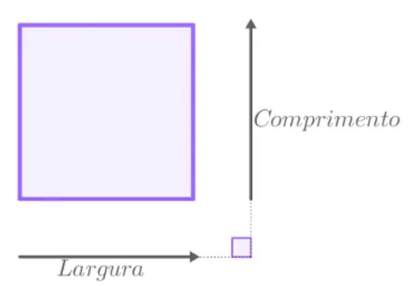

MENU EXERCÍCIOS
Este site tem por objetivo praticar e mostrar meus conhecimentos em HTML5,CSS3 e
JavaScritp.
Espero que a medida que eu vá ganhando conhecimento e melhorando minhas técnicas, eu possa
fazer esse site virar algo para ajudar outros estudantes que estão começando na carreira de
Front-end. No futuro pretendo incluir video aulas ensinando a fazer cada questão, assim como disponibilizar os códigos usado em cada resolução para consulta e
entre outras melhorias.
- Desde já, fica meu carinho pela a visita :-)
- >>ENTRAR<<
- >>ENTRAR<<
- >>ENTRAR<<
- >>ENTRAR<<
- >>ENTRAR<<
- >>ENTRAR<<
- >>ENTRAR<<
- >>ENTRAR<<
- >>ENTRAR<<
- >>ENTRAR<<
QUESTÃO 01: Escreva um programa que mostre na tela a mensagem "Olá, Mundo!"
QUESTÃO 02: Faça um programa que leia o nome de uma pessoa e mostre uma mensagem
de boas-vindas para ela: Ex:
Qual é o seu nome? João da Silva
Olá João da Silva, é um prazer te conhecer!
QUESTÃO 03: Crie um programa que leia o nome e o salário de um funcionário,
mostrando no final uma mensagem. Ex:
Nome do Funcionário: Maria do Carmo
Salário: 1850,45
O funcionário Maria do Carmo tem um salário de R$1850,45 em Junho.
QUESTÃO 04: Desenvolva um algoritmo que leia dois números inteiros e mostre o
somatório entre eles. Ex:
Digite um valor: 8
Digite outro valor: 5
A soma entre 8 e 5 é igual a 13.
QUESTÃO 05: Faça um programa que leia as duas notas de um aluno em uma matéria e
mostre na tela a sua média na disciplina. Ex:
Nota 1: 4.5
Nota 2: 8.5
A média entre 4.5 e 8.5 é igual a 6.5
QUESTÃO 06: Faça um programa que leia um número inteiro e mostre o seu
antecessor e seu sucessor. Ex:
Digite um número: 9
O antecessor de 9 é 8
O sucessor de 9 é 10
QUESTÃO 07: Crie um algoritmo que leia um número real e mostre na tela o seu
dobro e a sua terça parte. Ex:
Digite um número: 3.5
O dobro de 3.5 é 7.0
A terça parte de 3.5 é 1.16666

QUESTÃO 08: Desenvolva um programa que leia uma distância em metros e mostre os
valores relativos em outras medidas. Ex:
Digite uma distância em metros: 185.72. A distância de 85.7m corresponde a:
0.18572Km / 1.8572Hm / 18.572Dam
1857.2dm / 18572.0cm / 185720.0mm
QUESTÃO 09: Faça um algoritmo que leia quanto dinheiro uma pessoa tem na carteira (em R$) e mostre quantos dólares ela pode comprar. Considere US$1,00 = R$3,45.
QUESTÃO 10: Faça um algoritmo que leia a largura e altura de uma parede, calcule e mostre a área a ser pintada e a quantidade de tinta necessária para o serviço, sabendo que cada litro de tinta pinta uma área de 2metros quadrados
